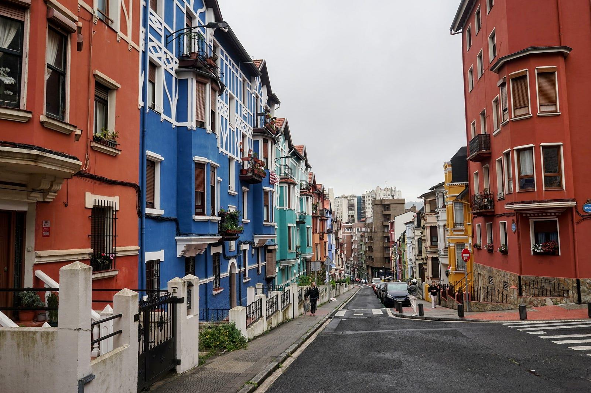
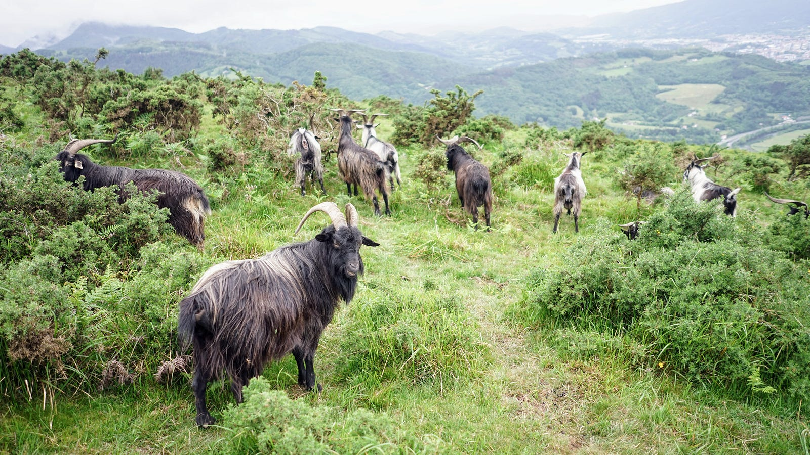
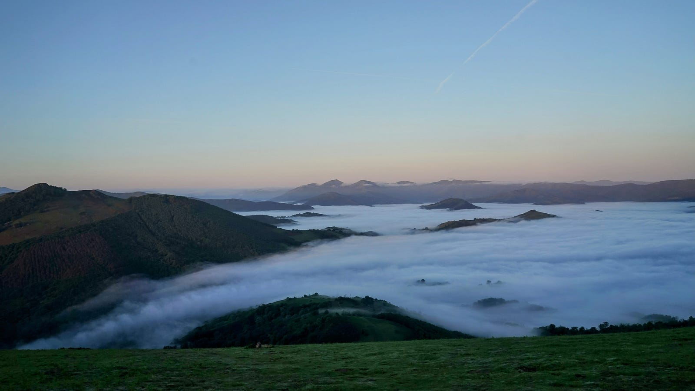
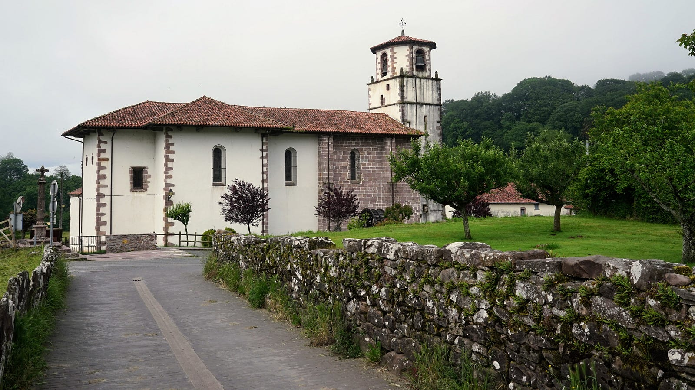
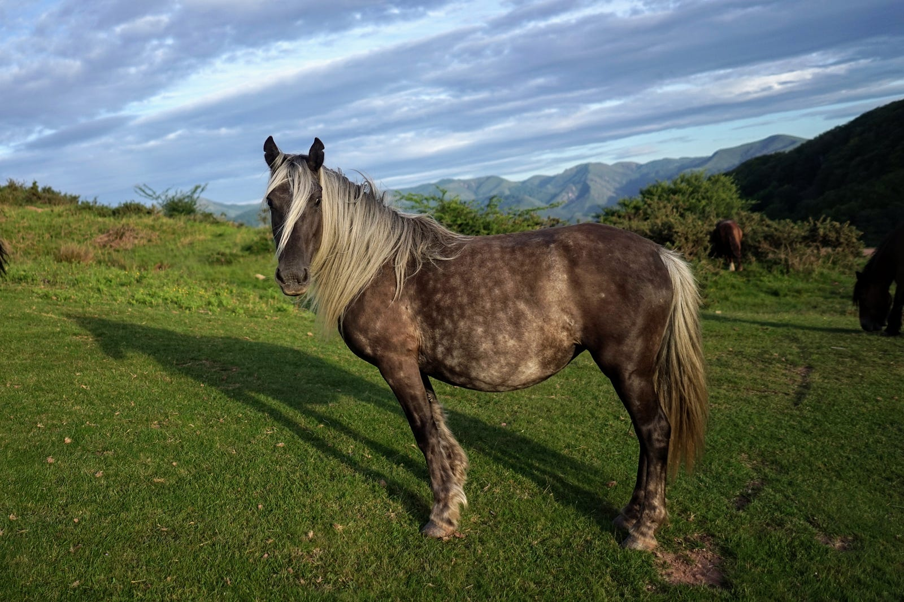
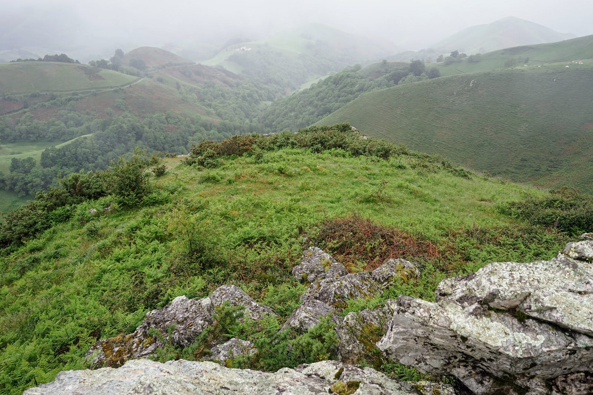
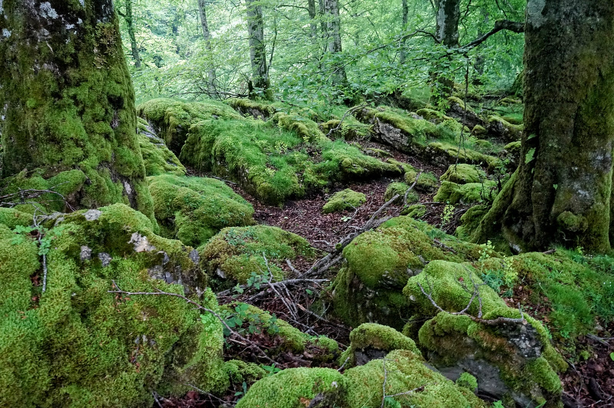
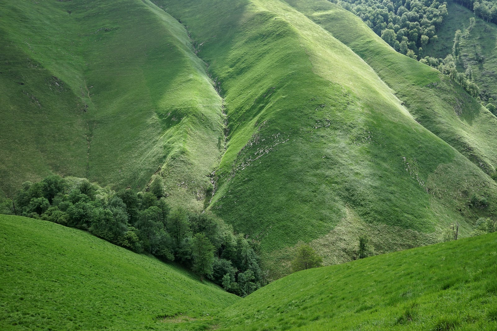
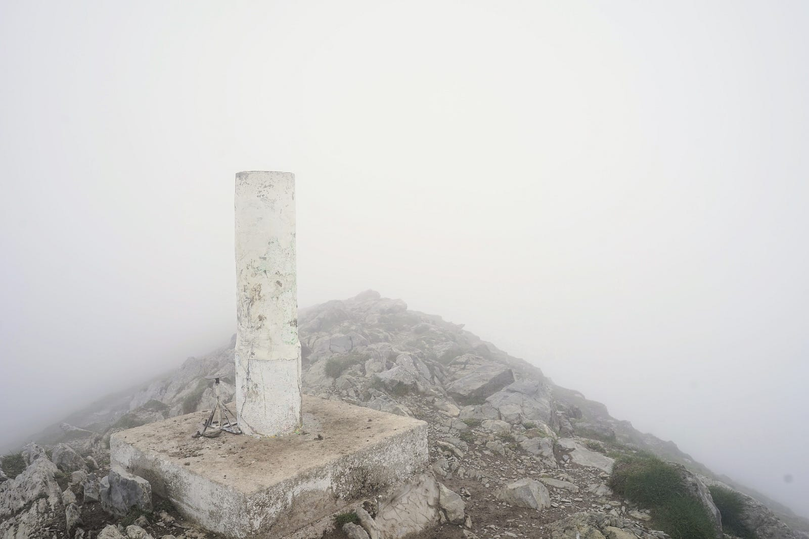

Pieszo z Hendaye do Lescun
Część pierwsza
Also available in English.

Przez całą długość Pirenejów prowadzą trzy szlaki. Dwa z nich są oficjalne, oznakowane czerwono-białymi paskami: GR10 po stronie francuskiej i GR11 po stronie hiszpańskiej. Trzeci to Haute Randonnée Pyrénéenne (HRP), który idzie najwyższą częścią łańcucha górskiego i często przekracza granicę. Jest to szlak wirtualny, który nie ma dedykowanego oznakowania, chociaż na wielu odcinkach prowadzi ścieżkami należącymi do innych szlaków.

Na przełomie maja i czerwca 2024 roku wybrałem się na wycieczkę, której celem było przejście pierwszej sekcji HRP, wiodącej z francuskiego miasteczka Hendaye leżącego na brzegu Atlantyku w pobliżu granicy z Hiszpanią, do wioski Lescun w Nowej Akwitanii. Miałem na tę trasę dwa tygodnie, łącznie z dojazdem do Hendaye i powrotem do domu.
Dzień zerowy: 26 maja
Podróż zaczyna się od wczesnoporannego lotu z Amsterdamu do Bilbao. Ponieważ nie ma możliwości dostania się na lotnisko tak wcześnie transportem publicznym, muszę spędzić tam większą część nocy. Sporo hałasu i jaskrawych świateł nie sprzyja drzemaniu, ale przynajmniej obsługa lotniska nie czepia się pasażerów leżących gdzie popadnie. Samolot ląduje w Bilbao wczesnym popołudniem, a miejski autobus wiezie mnie do centrum miasta. Tam spędzę noc w hostelu Quartier Bilbao na starówce. Ta część miasta to wąskie uliczki, plac przed katedrą, kawiarnie i sklepy z pamiątkami.
Na zachód od starego miasta znajduje się kilka ulic znanych z pomalowanych na wszelkie kolory kamienic. Robię parę zdjęć, ale architektoniczny efekt szpecą trochę zaparkowane na ulicy auta.

Potem idę szeroką aleją w kierunku Bazyliki Begoña — nie robi na mnie specjalnego wrażenia, ale spotykam tak starszą kobietę, która z jakiegoś powody pyta po francusku czy jestem Francuzem. Odpowiadam że nie, ale ona już zdecydowała, że i tak się jej przydam: wciska mi święte obrazki z napisami po francusku, i przekonuje (już po hiszpańsku), że znam nieźle francuski, i że w mogę też te obrazki dać swoim znajomym. Wzruszam ramionami, dziękuję za ulotki i idę dalej. Dopiero po jakichś dziesięciu minutach wyrzucam je do kosza z lekkim poczuciem winy.

Ciekawy jest spacer wzdłuż przecinającej miasto rzeki Nervión. Przy tejże rzece znajduje się symbol Bilbao — Muzeum Guggenheima — budynek ze stali i szkła o sfalowanych powierzchniach. Oglądam go tylko od zewnątrz. W środku znajduje się kolekcja sztuki współczesnej, którą zostawiam na inną wizytę do Bilbao.
Potem włóczę się wzdłuż rzeki, przekraczając parę mostów i podziwiając widoki. W niedzielę po południu wąskie uliczki starówki i szerokie bulwary nowszej części miasta są spokojne i niezatłoczone. Pogoda taka, jakiej się spodziewałem: chmury i mżawka. W każdym razie wydaje mi się, że warto tu jeszcze wrócić. Po zjedzeniu kilku pintxos i kieliszku wina w barze przy Plaza Nueva, idę spać do hostelu. Jutro wcześnie rano mam jechać autobusem do Hendaye, gdzie zaczyna się właściwa moja wędrówka.
Dzień pierwszy: 27 maja
Autobus firmy Blablacar odjeżdżać ma z dworca autobusowego o godzinie ósmej. Od hostelu to jakieś pół godziny spacerem wzdłuż opustoszałych jeszcze ulic i bulwarów. Dzień zaczyna się w Hiszpanii raczej późno, chyba ze względu na to, że ten kraj stosuje stefę czasową środkowoeuropejską, jest jednak geograficznie na zachodnim skraju kontynentu. Błądzę trochę wokół budynku dworca szukając stanowisk autobusów — w końcu znajduję je na poziomie podziemnym. Podróż będzie trwać dwie godziny i czterdzieści minut.
Autobus wyjeżdża na autostradę wijącą się pomiędzy wzgórzami okalającymi miasto. Po drodze przejazd przez malownicze San Sebastián (Donostia).
Już przy granicy z Francją przejeżdżamy przez miasto portowe Irún, a zaraz po drugiej stronie granicy miasteczko turystyczne Hendaye. Z przystanku idę przez kilkanaście minut w kierunku wybrzeża. Pierwszy dzień HRP pokrywa się prawie w całości ze szlakiem GR10 ,który przebiega przez plażę w Hendaye. Startuję kilka minut po dziesiątej — od morza idę przez misteczko i jego przedmieścia na wschód. Architektura podobna do większości miejscowości w Kraju Basków: pomalowane na biało kamienne domy o czerwonych dachach. Szlak dalej prowadzi przez pola, wioski. Przekraczam dwie spore szosy, i po około dwóch godzinach marszu znajduję się już poza terenami zabudowanymi. Ścieżka idzie teraz grzbietami wzgórz. Spotykam drugiego piechura ze sporym plecakiem i gawędzimy przez chwilę: on podąża wzdłuż GR10 do Morza Śródziemnego. Rozmowa nie trwa długo, bo on tylko mówi po francusku, a ja mam tego języka ograniczoną znajomość.

Idę dalej szczytami łagodnych zielonych wzgórz. Pasące się kudłate kozy przyciągają uwagę kilku wycieczkowiczów, którzy przystają i robią i zdjęcia — ja również się przyłączam. Dalej ze stoków jest widok an Hendaye i na pobliskie francuskie wybrzeże Atlantyku.

Po następnych dwóch godzinach marszu szlak dochodzi do granicy (w pobliżu Col D’Ibardin), gdzie znajduję restaurację i postanawiam zatrzymać się na kawę. Po kawie przy grzebaniu w plecaku zdaję sobie sprawę, że nie mam już ze sobą kabla USB do ładowarki do telefonu. To poważny problem, bo w czasię wędrówki używam aplikacji OsmAnd w telefonie jako mapy i korzystam też z nawigacji satelitarnej. Kabel musiał zostać w hostelu, a bez niego cały plan stoi pod znakiem zapytania. Restauracja ma przyłączony mały sklepik, gdzie zaraz idę szukać nowego kabla, bez sukcesu. Pytam też kelnerkę, która radzi mi spróbować sklepów znajdujących się trochę dalej na drodze. Okazuje się że jest tam cały kompleks handlowy — prima facie to dziwne miejsce na centrum handlowe, ale zgaduję, że to pewnie pozostałość po dawnej granicy celnej. Przyjeżdżali i dalej przyjeżdżają tu Francuzi zaopatrywać się w tańsze produkty hiszpańskie. Ten dziwny górski przeżytek dawnej Europy ratuje mi skórę, gdyż w jednym ze sklepów znajduję kabelek USB-C (ostatnia sztuka!) który pasuje do mojego telefonu. Podobne graniczne miasteczko handlowe poratuje mnie jeszcze raz w czasie tej wędrówki.
Pod wieczór dochodzę pod szczyt La Rhune, gdzie od strony Francji jest dojazd kolejką. Widać też jakieś budynki, pewnie hotel lub zajazd. Nie badam tego z bliska, idę dalej szukając miejsca na biwak. Stawiam namiot na płaskiej łące w pobliżu kamienia granicznego (mugarrien po baskijsku) numer 29.
W nocy odkrywam kolejny problem: z mojego dmuchanego materaca powoli ale nieubłagalnie wycieka powietrze. Sprawdzałem go przed wyjazdem, i nie zauważyłem tego problem, bo też przeciek jest bardzo powolny. Nie widzę żadnej oczywistej dziury, którą mógłbym próbować załatać. Materac trzyma powietrze jakąś godzinę po nadmuchaniu po czym spłaszcza się, i nie daje już wiele izolacji od ziemi. Nadmuchuję go kilka razy w ciągu nocy, ale w końcu daję za wygraną i próbuję zasnąć na twardej powierzchni sflaczałego materaca. Perspektywa spędzania tak nocy przez kolejne dni wędrówki nie jest pociągająca.
Dzień drugi: 28 maja

Rano parę minut przed godziną siódmą wstaję, a widok rozpościerający się przede mną rekompensuje nocne niedogodności. Poniżej, na południe od biwaku, w doline zalega pofalowane morze mgły, a wystają z niego wysepki wyższych wzgórz. Zbieram się i idę szlakiem w dół, w te chmury.
Po godzinie lub dwóch marszu dochodzę w pobliże przełęczy Col de Lizarrieta, gdzie znajduję górski zajazd. Robię tam przerwę na bagietkę z serem i kawę. Wchodzę też na internet i szukam jakiegoś miejsca, gdzie mógłbym kupić nowy materac lub karimatę. Nie ma nic w pobliżu, ale widzę na mapie sklep sportowy w wiosce Dantxaria, około osiemnastu kilometrów drogi. Szlak HRP prowadzi teraz na południe do Elizondo, a Dantxaria jest na wschód więc niezupełnie po drodze. Decyduję się jednak iść tam i rozwiązać sprawę materaca.
Droga przez pierwsze dwie godziny prowadzi górską szosą, a potem idę następne dwie godziny francuskim szlakiem GR10. Idę szybkim krokiem, żeby za dużo nie stracić czasu na tej wycieczce na zakupy. Dzień jest gorący i kiedy dochodzę do celu jestem zmęczony. Okazuje się że Dantxaria to kolejne graniczne miasteczko zapełnione sklepami. Sklep sportowy znajduje się w dużym centrum handlowym. Kupuję tam tanią karimatę i robię przerwę na posiłek w pobliskiej restauracji. Ładuję telefon, i dzwonię do domu, żeby porozmawiać z rodziną.

Jest około siedemnastej, gdy się zbieram. Podążam drogą Świętego Jakuba (po hiszpańsku Camino de Santiago) w kierunku Arizkún, gdzię dołączę znów do HRP. Jakubowe ścieżki to szklaki piesze, którymi pielgrzymi idą do Santiago de Compostela. Trasa nabardziej popularna to camino francés, która idzie od Saint-Jean-Pied-de-Port we Francji, przekracza Pireneje, a potem prowadzi przez Pampelunę, Logroño, Burgos i León, ale jest cała sieć tych dróg w na Półwyspie Iberyjskim, i w całej Europie. Za kilka dni moja marszruta jeszcze raz skrzyżuje się z drogą jakubową, na przełęczy Roncesvalles.
Po siódmej wieczorem znajduję małą przecinkę w lesie i rozbijam tam namiot na biwak. Robotnicy naprawiający drogę leśną kończą wkrótce pracę, i robi się cisza i spokój. Dzisiaj będzie się spało w miarę wygodnie.
Dzień trzeci: 29 maja
Budzę się rano przez siódmą i składam namiot, który zmókł w ciągu nocy i przybrał chyba dodatkowy kilogram na wadze. Ruszam dalej ścieżką jakubową. Droga prowadzi przez las, a potem przez łąki i pola. Po drodze przechodzę przez uroczą baskijską wioskę Amaiur / Maya. W tej części Pirenejów wiele miejsc ma takie podwójne nazwy: jedna po baskijsku a druga po hiszpańsku lub francusku.

Idę teraz przez tereny rolnicze i docieram do Arizkún około południa. Miasteczko jest sympatyczne ale bary i restauracje są jeszcze zamknięte, więc siadam na murku w cieniu kościoła i posilam się zapasami, które niosę w plecaku, czyli chlebem, serem, orzechami i suszonymi owocami.

Szlak idzie teraz na południowy wschód, w kierunku wioski Aldudes, po francuskiej stronie granicy. Idę przez zielone wzgórza, lasami lub pastwiskami. Ta część Pirenejów należy do Nawarry, która obecnie jest hiszpańską wspólnotą autonomiczną, a niegdyś była ważnym królestwem po obu stronach obecnej granicy. Do dzisiaj jednym z oficjalnych tytułów króla Hiszpanii to Rey de Navarra. Gmina przez którą właśnie maszeruję to zaś Baztán, znana z serii książek kryminalno-sensacyjnych (i opartych o nie filmów) Dolina Baztanu. Te tereny były zamieszkane od czasów prehistorycznych, o czym przekonują co krok spotykany grobowce megalityczne czyli dolmeny.
Dochodzę do przełęczy Berderizko na granicy z Francją około godziny siedemnastej, i postanawiam kończyć wędrówkę na dzisiaj. Szukam miejsca na biwak: idealnie powinno być płaskie, ale nie przy samej ścieżce. W końcu znajduję kilka metrów kwadratowych wśród ostów na małym pagórku.
Wczesny biwak ma swoję plusy i minusy. Z jednej strony dobrze nie martwić się szukaniem miejsca na nocleg wieczorem, gdy kończy się światło dzienne i własne siły. Z drugiej strony biwaki pod gołym niebem nie są zbyt wygodne, i wieczory dłużą się czasami. Dzisiaj zabijam czas spacerując po okolicy i robiąc zdjęcia pejzażu, jak również pasących się na łąkach koni, który wyglądają wyjątkowo przystojnie w blasku zachodzącego słońca.

Dzień czwarty: 30 maja
Rano panorama zupełnie inna: leje deszcz, jest pochmurno, a widoczność coraz bardziej się pogarsza. Jak się okaże niedługo, jest to oblicze, które zachodnie Pireneje często pokazują, czasami na kilka dni. Schodzę w tej mżawce w kierunku Aldudes.
W wiosce planuję znaleźć jakieś miejsce do podładowania telefonu. Kościół jest otwarty i postanawiam sprawdzić, czy jest tam dostępny prąd. Jest. Siedzię na kościelnej ławce i schnę, i czekam, aż bateria dojdzie do 100%. Potem przez internet rezerwuję nocleg w hostel w Auritz / Burguete, jakieś dzwadzieścia kilometrów drogi od Aldudes. Trzeba tam będzie dojść przed dwudziestą.

Opuszczam kościół i idę do wioskowego sklepiku uzupełnić zapasy jedzenia. Potem jeszcze robię małą przerwę na śniadaniową bagietkę z serem i na kawę w przydrożnej gospodzie.
Ruszam dalej: teraz ścieżka wspina się znów na grzbiety wzgórz. Idę przez kwieciste ogrody, potem pola pełne ambon dla myśliwych, a potem całkowicie opustoszałą asfaltową drogą. Pokazuję się drogowskazy do Roncesvalles (Roncevaux).
Późnym popołudniem zbliżam się do Auritz. Ścieżka schodzi w dół i prowadzi przez przez trawiastą równinę pełną kwiatów. Ścieżkę co jakiś czas przecina strumyk zwany Xuringoa ugaldea.

Do hostelu docieram około osiemnastej. Nocują tu głównie pielgrzymi podążający do Santiago. Auritz jest jakieś trzy i pół kilometra od Roncesvalles, gdzie jest wielkie klasztorne schronisko pielgrzymkowe, a tutaj goszczą się ci, którym zabrało tam miejsca. Większość osób pielgrzymuje w pojedynkę, i chętnie w hostelach wszczynają rozmowy. Ja już przez kilka dni z nikim nie rozmawiałem, wiec wraz z kilkoma pielgrzymami idę kolację do pobliskiej restauracji. Miejscowości wzdłuż drogi jakubowej często specjalizują się w obsłudze piechurów podążających do Santiago. Na przykład restauracje serwują tanie ale kompletne menu pielgrzyma: za jakieś 10 euro można dostać sałatkę, drugie danie, deser i kieliszek wina.
Moi współbiesiadnicy to starsza kobieta z Anglii, młody chłopak z Niemiec i mężczyzna w średnim wieku z Włoch. Wszyscy idą w pojedynkę. Nie mają też motywacji religijnych — dotyczy to nie tylko tej trójki, ale w ogóle dużej części pielgrzymujących. Dla nich ten marsz to osobiste wyzwanie, i okazja do doświadczenia czegoś trochę odmiennego od zwykłego codziennego życia, lub typowych wakacji. Czyli właściwie podobne motywacje, jak te, którymi kierują się piechurzy chodzący długodystansowymi szlakami górskimi.
Po obiedzie idę na mały spacer po misteczku, gadam przez telefon z rodziną, a potem czytam trochę w świetlicy schroniskowej. W nocy staram się naspać się do syta w wygodnym łóżku: jutro znów nocleg gdzieś w górach.
Dzień piąty: 31 maja
Rano idę na kawę do tej samej restauracji, gdzie jedliśmy wczoraj kolację. Piję dwie na zapas. Rezerwuję też nocleg na następny dzień w schonisku Chalets de Iraty. Wkrótce po dziewiątej ruszam w drogę.
Po pół godzinie mijam wioskę Roncesvalles (Oreaga po baskijsku, Roncevaux po francusku). Jest tu pomnik przedstawiający sławną bitwę w wąwozie Roncevaux. W roku 778 Baskijscy wojownicy pokonali tutaj tylną straż wycofujących się wojsk frankijskich króla Karola Wielkiego. Dowodzący Frankami hrabia Roland poniósł tu śmierć, a jego czyny i to wydarzenie stało się podstawą eposu rycerskiego Pieśń o Rolandzie (Chanson de Roland).

Dzisiaj rano szlak prowadzi drogą jakubową, którą pielgrzymi przekraczają Pireneje idąc od Saint-Jean-Pied-de-Port w kierunku Roncesvalles. Idę tą drogę w kierunku odwrotnym, podążając na północ, tak więc mijam dziesiątki albo i setki piechurów, którzy witają mnie pielgrzymkowym pozdrowieniem ¡Buen camino! Są wśród nich kobiety i mężczyźni, Europejczycy i Azjaci. Większość to albo ludzie na emeryturze, albo młodzi w wieku studenckim.

Pogoda jest dzisiaj chłodna i mglista. W lesie jest dużo błota, a na odsłoniętych przełęczach wieje silny wiatr, więc pielgrzymi zaczynają wędrówkę w wyzywających warunkach.

Na granicy moja ścieżka oddziela się od drogi Świętego Jakuba i skręca na zachód. Teraz nie spotykam już żywej duszy. Idę przez niemożliwie zielone krajobrazy. Kolor roślin kontrastuje z mleczną atmosferą, i wydaje się niemal fluorescencyjny. Jaskrawe trawy na otwartych łąkach rywalizują z lśniącym mchem pokrywającym podściółkę i pnie w lesie.

Schodzę bujną łąką zygzakami po stromym stoku a ta zielona, mokra trawa w dzisiejszych warunkach ma jeszcze inny efekt: moje buty cały czas przesiąknięte są wodą i nie ma żadnej szansy, żeby wyschły.
Po południu ścieżka prowadzi grzbietami wzgórzy. Jest dużo wiatru a powietrze przesiąknięte jest substancją pośrednią pomiędzy mgłą a mżawką. Idzie się ciężko, mało widać, i robi się późno. Czas znaleźć miejsce na biwak, a tu wszędzie strome stoki. Nie widziałem nikogo od rana, i wydaje się, że jestem na końcu świata. Nie jest to jednak prawdą, a przekonuję się o tym, kiedy już po ósmej wieczorem moja zabłąkana ścieżka przekracza szczyt wzgórza i po drugiej stronie niespodziewanie widać asfaltowaną szosę, a w pobliżu kilka chat. Idę dalej doliną, wzdłuż niemożliwie błotnistego brzegu rzeczki, ale teren robi się bardziej płaski i niedługo znajduję miejsce na obóz. Rozkładam namiot, a potem długo płukam ukiszone w ciągu trudnego dnia stopy w strumyku. Pora spać.
Dzień szósty: 1 czerwca
Wstaję o ósmej i składam obóz. Oczywiście przez noc buty ani skarpetki nie wyschły, no ale to nie ma znaczenia, gdyż wokół pełno mokrej trawy, więc i tak by przemokły po kilku minutach.
Dzisiejsza trasa HRP pokrywa się w większości z GR10 po francuskiej stronie granicy, i prowadzi prosto na wschód. Jest więc dobrze oznakowana i nie przedstawia większych trudności. Pogoda jest zmienna, ale pokazuje się czasami trochę błękitu na niebie, a to zawsze czyni marsz przyjemniejszym.
Wszesnym popołudniem ścieżka łączy się z szosą — jest tu też gospoda i chatka pasterska, która ogłasza sprzedaż sera. Kupuję ćwiartkę owczego od dwóch kobiet z psem, które prowadzą ten przybytek. Potem zatrzymuję się na posiłek w gospodzie Le Kayolar, która składa się z dwóch ciasnych i niskich izb z kilkoma stołami. Zamawiam omlet z grzybami, frytki i butelkę cydru. Wszystko smakuje świetnie.
Stąd do schroniska już tylko pięć i pół kilometra. Po drodze spotykam jeszcze starszego pana z dużym plecakiem. Zamieniam z nim kilka zdań — podąża szlakiem GR10 biwakując pod chmurką.
Schronisko dzisiejsze to część kompleksu turystycznego Chalets d’Iraty. Mają tam domki do wynajęcia, restaurację, sklepik, no i właśnie tę gîte d’étape, gdzie będę nocował. Melduję się w recepcji, uzupełniam zapasy orzechów, suszonym owoców i chleba w sklepie, i idę paręset metrów dalej do schroniska. Okazuje się, że mam cały pokoik dwuosobowy tylko dla siebie: luksus! Mogę tu też wziąć prysznic, wysuszyć buty, i wyprać skarpetki i koszulkę.
W schronisku jest oprócz mnie jeszcze dwóch Francuzów w średnim wieku, którzy idą szlakiem GR10, nocując w schroniskach. Ten szlak, jak się okazuje, jest bardzo we Francji popularny, i kiedykolwiek HRP się z nim łączy, zawsze można liczyć na spotkanie innych wędrowców.
Wieczorem relaksuję się przy kominku (chociaż ogień często mi gaśnie) oraz szkicuję plan na następne dni. Jutro nocleg przewiduję w chatce górskiej Ardane, a pojutrze w schronisku Belagua, już znowu po hiszpańskiej stronie.
Dzień siódmy: 2 czerwca
Ruszam w drogę o ósmej i idę przez stoki porośnięte trawą. Jest tu pełno wąskich ścieżek idących równolegle na różnej wysokości. Czasami znikają, łączą się, lub krzyżują. Do tego widoczność jest bardzo słaba, więc ciężko trzymać się szlaku. O dziewiątej trzydzieści robię przerwę na śniadanie i delektuję się doskonałym serem kupionym wczoraj u pasterek.
Dzisiaj osiągnę najwyższy punkt mojej wędrówki: szczyt Orhi o wysokości 2017 metrów nad poziomem morze. Podejście na tę górę prowadzi ostrym grzbietam o nazwie Zazpigain: w tej stefie Pirenejów warstwy skał osadowych usawione są prawie w pion, więc idzie się jak po ostrzu noża. Po obu stronach stroma przepaść, chociaż we mgle właściwie nie widać jaka stroma i jaka głęboka. Wyobraźnia dodaje jednak brakujące przez pogodę detale.

Im bliżej szczytu, tym bardziej wyje w uszach wiatr. Naciągam na głowę kaptur i idę powoli, ostrożnie, krok po kroku, ale jednak robiąc postęp. Docieram na szczyt o trzynastej trzydzieści. Jest tu mały biały słupek, a wokół biała pustka. Robię parę zdjęć, filmik, a potem chronię się przed wichurą schodząc kilka kroków w dół na stronę zawietrzną grzbietu. Zastanawiam się, jak tu wygląda w słoneczny dzień.

Schodząc ze szczytu błądzę trochę, zawracam i szukam właściwego szlaku; udaje się. Po zejściu z góry szlak przechodzi przez asfaltowaną szosę. W kłębach wirującej mgły parkuje tu jakieś auto. Zawsze dziwnym i niespodziewanym wydaje się natknąć się na cywilizację po kilku godzinach samotnej mozolnej wędrówki przez zatraconą dzicz.
Do chatki Ardane docieram już po siedemnastej. Jest to buda ze stołem, paleniskiem i platformami do spania. Niedaleko jest domek pasterza, który tu mieszka podczas sezonu wypasu owiec. Zajęty jestem rozpalaniem ognia, gdy pasterz zagląda do chatki. Pyta się, skąd pochodzę i dokąd podążam. Gadamy przez chwilę. Bardzo mu imponuje, że znam kilka słów po baskijsku, takich jak agur (do widzenia) czy eskerrik asko (dziękuję). Gdy na pytanie o zawód odpowiadam, że pracuję na uniwersytecie, mówi: no tak, oczywiście!
Po odejściu pasterza dalej próbuję utrzymać ogień, żeby trochę obeschnąć. Ale to niełatwe: do palenia jest tu tylko gruby postkręcany pień sosny. Z trudnością wycinam z niego mniejsze, łatwiejsze do zapalenia szczapy nożem kieszonkowym. Ogień przez jakiś czas się pali, ale niedługo przygasa, a ja tracę do niego cierpliwość.
Jem coś, i kładę się spać na górnej pryczy. W nocy budzi mnie jakiś chrobot — to myszy dobierają się do moim zapasów, które niemądrze zostawiłem w plastikowym worku na stole. Już wygryzły dziurę, i zajadają się orzechami. Biorę worek ze sobą na prycz: tu myszom trudniej będzie wleść.
Ciąg dalszy nastąpi…